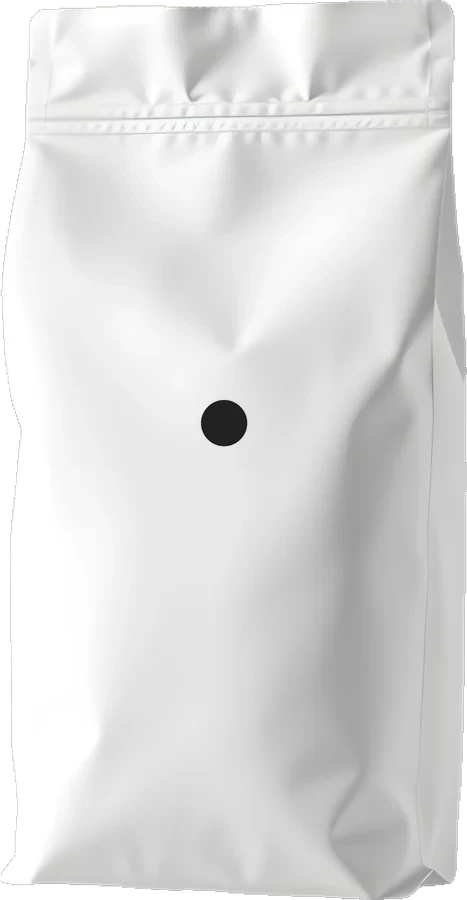
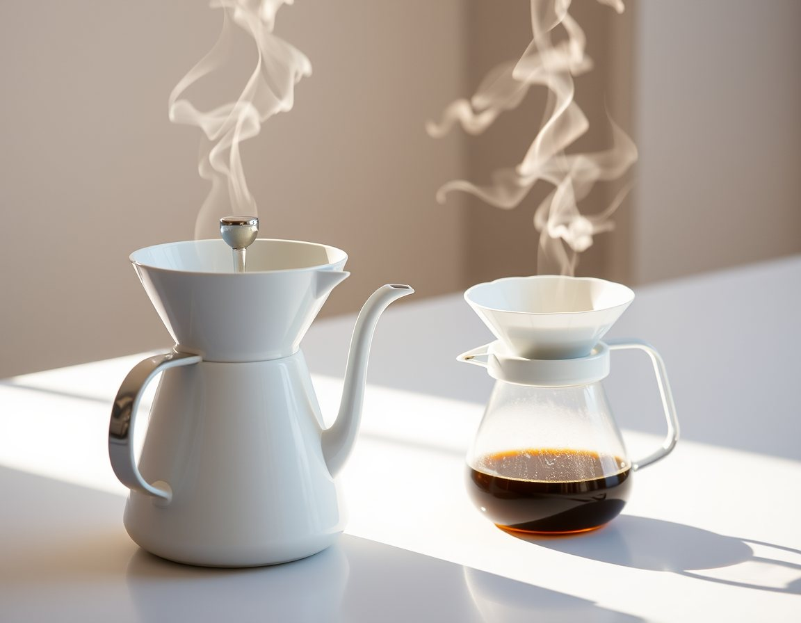
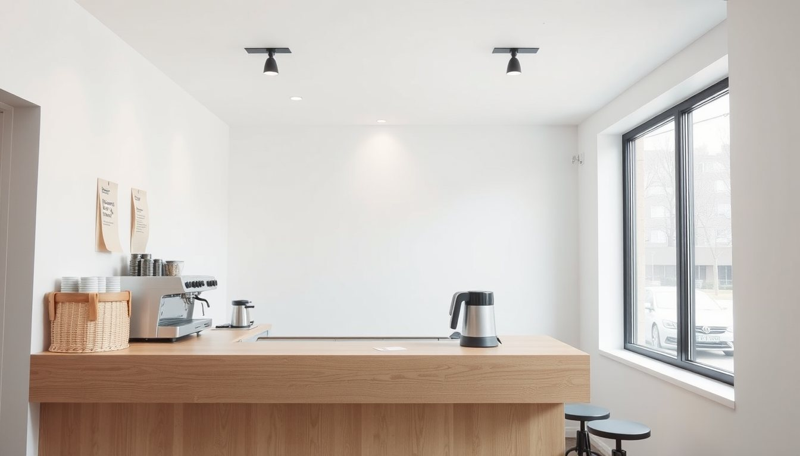
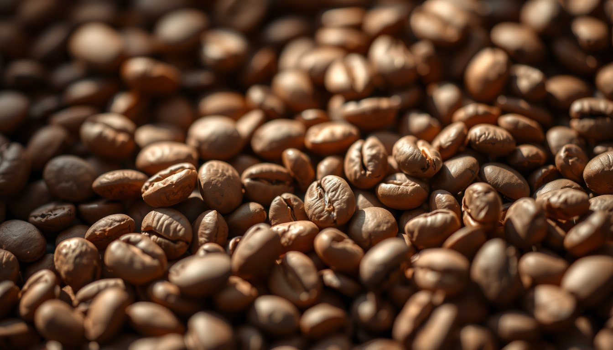
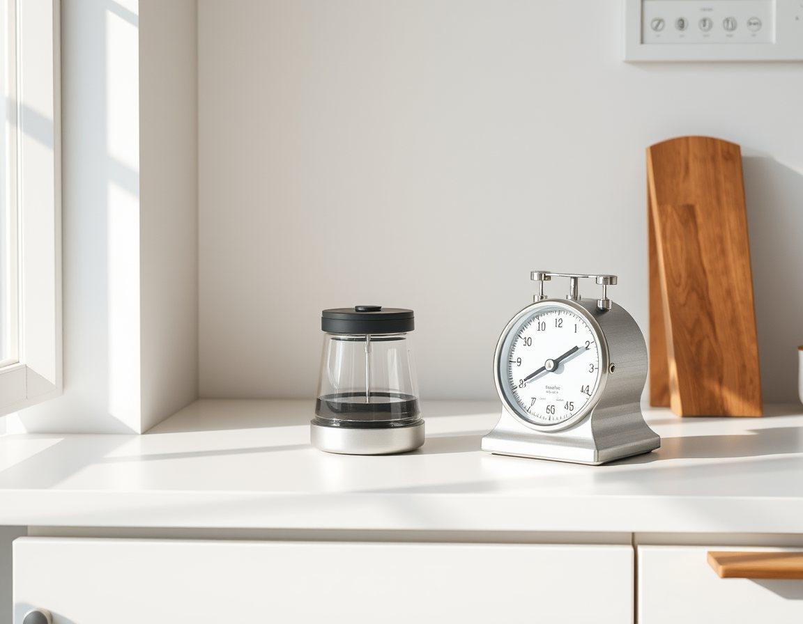

Az çeşit, iyi çekirdek, doğru demleme. Gerisi süs.
Çalışma saatleriDört köken, her biri 250 g veya 1 kg. Çekirdek ya da demleme yönteminize göre öğütülmüş gönderilir.

15 g kahve, 250 g su, 93 °C. Sayacı başlatın, adımlar sırayla yanacak.

Masa yok, müzik alçak. Kahvenizi alıp oturabilir ya da yolunuza devam edebilirsiniz.

